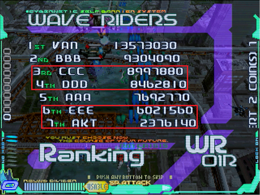
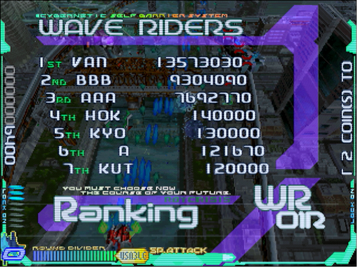
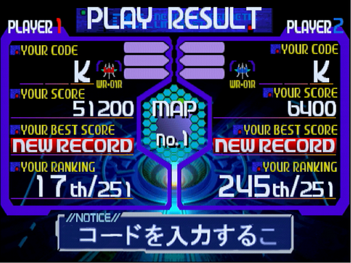
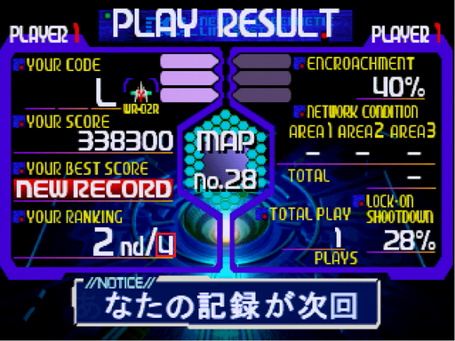
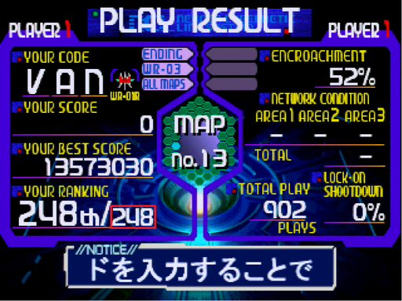
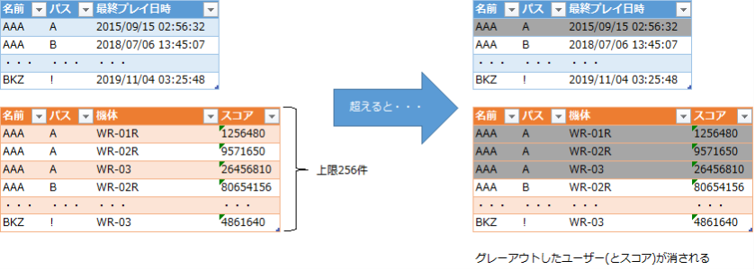

ユーザーデータ
このゲームではROMカードにプレイ状況を記録し、それによって隠し要素の解放やハイスコアの保存など、様々な恩恵が受けられます1。手順は以下の通りです。
- ゲームスタート時、ユーザーネーム3文字＋パスワード1文字を入力します。
- 使用可能な文字は、以下の48種類です。ただし、ネーム部分が全て空白だと登録されません。よって、組み合わせの総数は通りです。
- A～Z
- 0～9
- ?
- !
- /
-- (
- )
- :
- .
- ,
- "
- '
- 空白
- 使用可能な文字は、以下の48種類です。ただし、ネーム部分が全て空白だと登録されません。よって、組み合わせの総数は通りです。
- (既存データでプレイした場合のみ)まずマップ、続けて自機を選びます。
- プレイ終了後、ゲームオーバー画面の裏で情報がセーブされます2。
※ここから下は、ちょっとマニアックなお話です。慣れるまで気にしなくて構いません。
補足：データと難易度の関係
本作のゲームランクには、プレイ回数・スコア・解放した実績も影響します。その差は意外と大きなものがあるようです(体感的に)。
- 例えば、プレイ70回のデータと700回のデータでは露骨に変わります。
- スコアも、地味に無視できない影響を持ちます。普通にやると稼げない3号機は、この点ちょっと有利。
- 実績は「ノーマルエンド達成」「3号機解放」「全マップ踏破」の3つですが、前者2つを取るとハッキリ難しくなります。リミッター解除ですね。
検証：ユーザーデータの上限は?
Wikipediaだと「64人」、ゲーメストは「256人」と、資料によってまちまちです。「超えた場合、古いデータから削除される」という、その基準も不明です。
そこで、手持ちの基板を使って確かめました。256回ユーザーデータを作って。
結果は、赤枠のユーザーが消えています。最初に登録した(はずの)「VAN」が健在なので、削除基準は最終プレイ日時が古い順ですね。
さて、この時ユーザー登録ごとにカウントアップした値を見ると、256でした。なら、ゲーメストの「256人」が正しいのか? 否、実はもう少し複雑な仕様です。
下の画像は、ユーザー数がいっぱいの状態で撮ったリザルト画面。使用した機体は、WR-01Rです。
新規にユーザーを登録し、WR-02Rでプレイしてみます。ランキングの総数が1増えて、4になりました。
この状態で、既存ユーザーのWR-01Rでプレイしてみると・・・なんという事でしょう、総数が減っています。
これは、消されたユーザーが持っていたWR-01Rの枠も削除されたからです。つまり、全機体合わせて256枠というのがホントのところです。全員が3機体使うとすると、85人分＋あまり1枠ですね。
この結果を基に推測した図がこちら。あくまで結果からの推測ですが、だいたい合ってる・・・はず。
ちなみに、領域はユーザー登録時に確保され、その時点で3件消費するようです。
1. 公式サイトでは「GNet-Personaldata-Administer」としています。無理矢理だな! ↩
2. まず無いと思いますが、それまでにリセットしたりすると「解放した」事にはなりません ↩